Castration is the removal or destruction of the testes of a male animal. A castrated male bovine is called a steer. It is one of the most common surgical procedures in cattle practice worldwide, done for behaviour, management, meat quality and breeding control. This guide explains why castration is done, the best age, the three methods step by step — surgical, burdizzo and elastrator — plus anaesthesia, pain management, aftercare and complications.
What Is Castration and Why Is It Done?
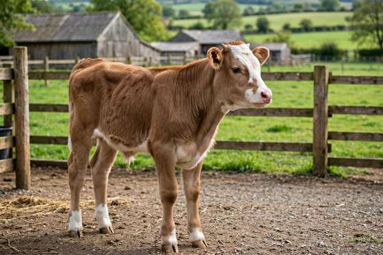
A young bull calf — castration is best done early in life
Castration removes the source of testosterone, the hormone that drives male behaviour and development. Without it, the animal becomes calmer, grows more evenly and produces meat of better quality. Farmers castrate bull calves that are not needed for breeding — usually the great majority of male calves on a beef or dairy farm.
1
Calmer, safer behaviour(Steers are far less aggressive than bulls — safer for farmers, handlers and other animals)
2
Better meat quality(Steer meat is more tender, better marbled and free from the strong flavour of bull meat)
3
Easier management(Steers can be kept in mixed groups without fighting or mounting, and need lighter fencing and handling facilities)
4
Prevents unwanted breeding(Unplanned mating with heifers or low-quality bulls damages the breeding programme and the herd's genetics)
5
Fewer injuries and losses(Bulls fight, break fences and injure each other and smaller animals — castration greatly reduces these losses)
6
Better growth and feed use(Steers put their energy into growth instead of sexual behaviour, giving steadier weight gain)
Best Age for Castration
The veterinarian examines the calf and confirms both testes are descended
Age is the single most important decision in castration. Younger calves feel less stress, bleed less, heal faster and have far fewer complications than older animals.
1
First few weeks of life(The elastrator rubber ring method is only possible at this age, while the scrotum is small)
2
2 to 3 months — the ideal window(The calf is strong enough for any method, recovers quickly and is still well before puberty)
3
Before weaning(Castrate well before weaning so the calf does not face two stresses at once)
4
Older calves and adult bulls(Surgical castration is preferred; the animal needs full anaesthesia, more care and longer recovery)
⚠ Important Tips:
Always confirm both testes are descended into the scrotum before castration. A calf with one testis retained (cryptorchid) must be referred to a veterinarian — never castrate only the descended testis.
Do not castrate a sick, weak or heavily stressed calf — wait until it is healthy.
Choose a cool time of year and avoid the peak fly season where possible.
Restraint, Preparation and Hygiene
Good restraint protects the animal, the veterinarian and the handler. Preparation and hygiene decide whether the wound heals cleanly or becomes infected.
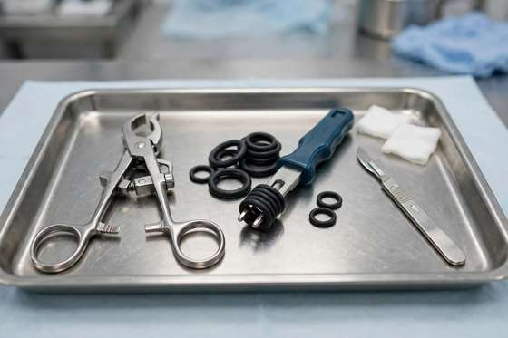
Clean, sterile instruments — burdizzo, elastrator and scalpel
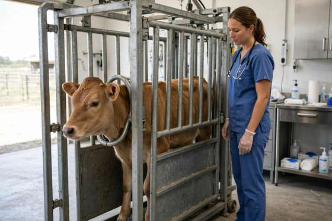
Safe restraint in a crush — calm and secure
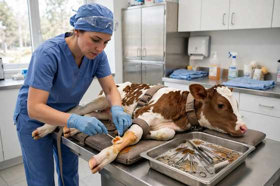
Clean instruments and a disinfected surgical site
1
Restrain safely(Young calves are held in a crush or cast on their side; older animals are restrained in a crush with the head held)
2
Check the animal first(Confirm health, check both testes are descended, and check tetanus vaccination status)
3
Clean and disinfect the scrotum(Wash off dirt and dung, then scrub with antiseptic solution before any method)
4
Use sterile instruments and gloves(Sterilised or disinfected instruments, clean gloves and a clean working area prevent wound infection)
5
Prepare pain relief in advance(Local anaesthetic and anti-inflammatory medicine are prepared before the procedure starts)
Anaesthesia and Pain Management
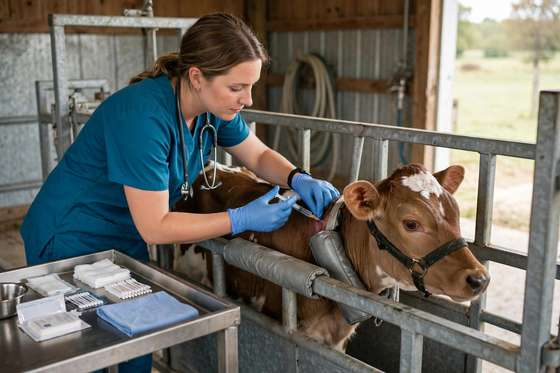
Local anaesthesia before castration — pain relief is essential for every method
Castration is painful, and pain relief is now a basic standard of veterinary care for every method — surgical, burdizzo and elastrator alike. Pain relief also improves recovery: calves that receive it eat sooner and gain weight better.
Local anaesthesia: lidocaine is injected into the spermatic cord and around the neck of the scrotum, or into the testis, a few minutes before the procedure. As prescribed by a veterinarian.
Anti-inflammatory pain relief: a non-steroidal anti-inflammatory drug such as meloxicam or flunixin meglumine is given to control pain and swelling after the procedure. As prescribed by a veterinarian.
Sedation for older animals: older calves and adult bulls may need sedation, for example xylazine, so they can be restrained and handled safely. As prescribed by a veterinarian.
Wait for the anaesthetic to work: allow several minutes after the local anaesthetic injection before starting the procedure.
Method 1 — Surgical Castration (Open and Closed Technique)
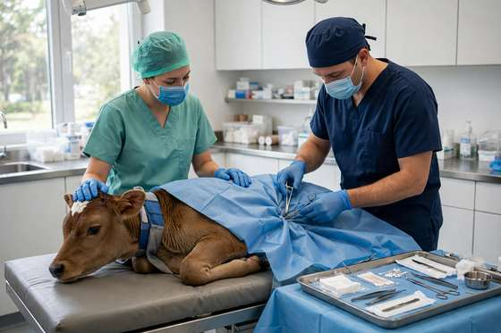
Surgical castration — quick, reliable and suitable at any age
Surgical castration removes the testes through an incision in the scrotum. It is the most reliable method, works at any age, and is the method of choice for older calves and adult bulls.
1
Restrain and prepare(Calf cast on its side or held in a crush; scrotum cleaned and disinfected)
2
Give local anaesthesia(Lidocaine into each spermatic cord; wait a few minutes for it to take effect)
3
Incise the scrotum(Remove the lower third of the scrotum, or make a lengthwise incision on each side, exposing the testis)
4
Closed technique(The cord is tied off with the tunica vaginalis still covering it — the safer option, with less risk of infection spreading upward)
5
Open technique(The tunica vaginalis is cut open, the cord is clamped with an emasculator and tied, and the testis is removed)
6
Check for bleeding(Each cord stump is checked before release — bleeding must be stopped before the animal stands)
7
Leave the wound open(The scrotal wound is left open to drain; antiseptic spray is applied and tetanus protection is confirmed)
Advantages: immediate and certain result, suitable at any age, the testes are fully removed. Disadvantages: open wound with risk of bleeding, infection and fly strike; needs skill, anaesthesia and good aftercare.
Method 2 — Burdizzo (Bloodless Castration)
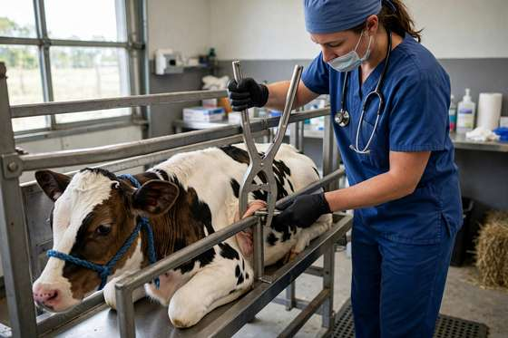
The burdizzo crushes the spermatic cord through unbroken skin — no wound, no bleeding
The burdizzo is a large clamp that crushes the spermatic cord through the intact skin of the scrotum. The blood supply to the testis is destroyed, and the testis slowly shrinks and stops working over several weeks. No incision is made, so there is no open wound and no bleeding.
1
Restrain and prepare(Calf standing in a crush or cast; scrotum cleaned; local anaesthesia given)
2
Feel the spermatic cord(Push one testis down and feel the cord as a firm rope at the neck of the scrotum)
3
Clamp the first cord(Place the burdizzo across the cord, close it firmly and hold for about 10 seconds)
4
Clamp the second cord(Repeat on the other side, at a slightly different level so the skin is not crushed twice in the same line)
5
Check both cords are crushed(Feel each cord after clamping — a missed cord means the method fails)
Advantages: no wound, no bleeding, low infection risk, good for older calves. Disadvantages: needs a skilled operator; if a cord is missed the testis keeps working; swelling and pain for several days; the result takes weeks to confirm.
Method 3 — Elastrator (Rubber Ring Method)
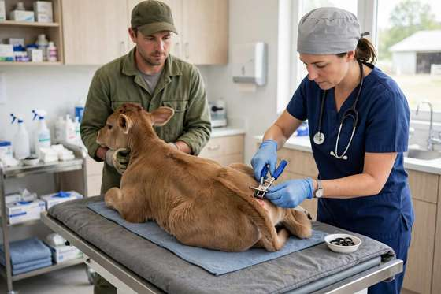
The elastrator stretches a tight rubber ring over the scrotum of a young calf
The elastrator stretches a strong rubber ring and places it tightly around the neck of the scrotum, above both testes. The ring cuts off the blood supply, the scrotum and testes dry up, and the whole scrotum falls off in two to four weeks.
1
Only for very young calves(The testes must be small enough to pass through the stretched ring — usually in the first few weeks of life)
2
Check both testes are down(Push both testes fully into the scrotum before placing the ring — a testis left above the ring keeps working)
3
Give pain relief and tetanus protection(Local anaesthesia and anti-inflammatory medicine; tetanus cover is especially important with this method)
4
Place the ring(Stretch the ring with the elastrator, pass the scrotum through it, and release the ring high on the neck of the scrotum)
5
Check the ring position(Both testes must be below the ring; the ring must sit tight and even)
6
Watch for 2 to 4 weeks(The scrotum shrinks, dries and drops off; check regularly for swelling, smell or fly strike)
Advantages: very simple, cheap, no wound, no bleeding, quick to apply. Disadvantages: only for young calves; slow result; risk of tetanus; pain in the first days; failure if a testis is missed or the ring slips.
Comparing the Three Methods
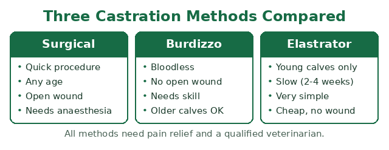
The three castration methods at a glance — the right choice depends on age and conditions
The veterinarian chooses the method by the calf's age, size and health, the facilities available, and the season. As a field guide:
Under 1 month: elastrator or surgical — the calf is small and recovers fast.
1 to 6 months: surgical or burdizzo — the ideal age window for both.
Over 6 months and adult bulls: surgical castration is preferred — reliable, with full anaesthesia and careful aftercare.
Fly season or dirty conditions: the bloodless burdizzo avoids an open wound that attracts flies.
Every method needs pain relief — the choice of method never removes the need for anaesthesia and anti-inflammatory medicine.
Postoperative Care
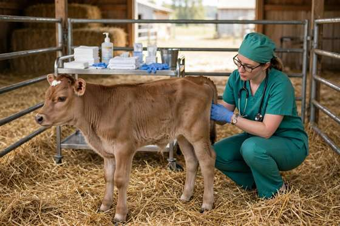
Aftercare — a clean, dry pen and daily wound checks for the first week
Most calves recover quickly, but the first week decides whether healing is clean or complicated. Good aftercare is simple and mostly about watching.
1
Clean, dry housing(Keep the calf in a clean, dry, straw-bedded pen away from mud, dung and deep water)
2
Check the wound daily(Look for bleeding, discharge, bad smell, flies on the wound, or swelling that keeps increasing)
3
Allow gentle movement(Light exercise reduces swelling — do not keep the calf tied or boxed for days)
4
Normal feed and water(Offer feed and clean water as usual; a calf that stops eating needs a veterinary check)
5
Fly control(Keep flies off the wound — fly strike on a fresh wound is a serious complication)
6
Complete the pain relief course(Give all medicines exactly as prescribed by the veterinarian)
Complications — Signs to Watch For
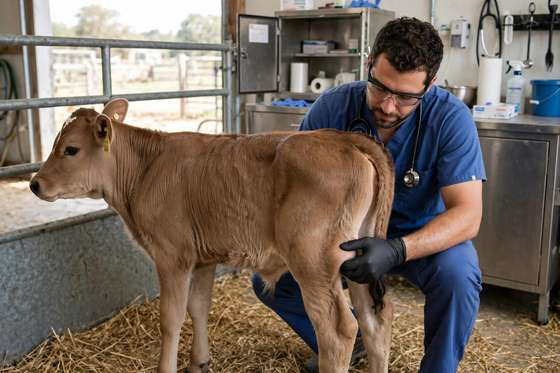
Swelling is common — but swelling that keeps growing, or fever, needs a vet
Some swelling and mild discomfort are normal for a few days. The signs below are not normal and need veterinary attention.
1
Bleeding(Steady dripping or a stream of blood from the wound — restrain the calf and call the veterinarian at once)
2
Infection and abscess(Hot, painful swelling, pus or foul-smelling discharge, fever, loss of appetite)
3
Excessive swelling(Mild swelling is normal; swelling that spreads to the belly or keeps growing is not)
4
Tetanus(Stiffness, locked jaw, ears pulled back, difficulty walking — a life-threatening emergency, preventable by vaccination)
5
Fly strike (myiasis)(Maggots in the wound — clean the wound and get veterinary treatment immediately)
6
Failure — the animal stays a stag(One testis missed, a slipped ring or an uncrushed cord leaves the animal partly male — it must be re-examined and corrected)
Field Guidelines for Farmers and Veterinarians
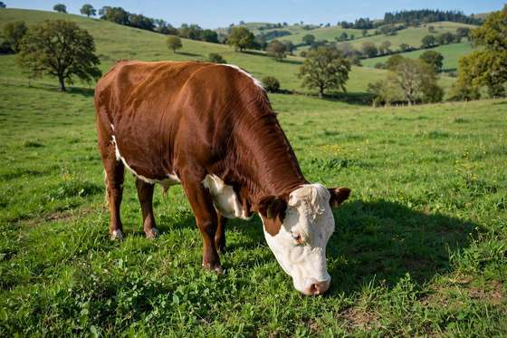
The result — a healthy, calm steer growing well on pasture
Important: All surgical procedures must be performed by a qualified veterinarian under proper anaesthesia and aseptic conditions. Castration without anaesthesia, sterile instruments and tetanus protection causes severe pain, infection and death.
⚠ Field Guidelines:
Castrate early — within the first 2 to 3 months — for the fastest recovery and fewest complications.
Vaccinate against tetanus and clostridial disease before castration, following the veterinarian's schedule.
Always confirm both testes are descended before starting any method.
Choose a cool, dry day and avoid the peak fly season where possible.
Give pain relief for every method — local anaesthesia plus an anti-inflammatory drug, as prescribed by a veterinarian.
Keep clean records: date, method, calf identification and any medicines given.
Never castrate a sick, weak or recently transported calf — wait until it is settled and healthy.
Watch every castrated calf daily for at least two weeks.
Frequently Asked Questions
What is castration in cattle?
Castration is the removal or destruction of the testes of a male animal, so that it can no longer breed and produces much less testosterone. A castrated male bovine is called a steer. It is done by surgical removal of the testes, by crushing the spermatic cords with a burdizzo, or by cutting off the blood supply with a rubber ring (elastrator).
What is the best age to castrate a calf?
The best age is as young as practical, usually within the first two to three months of life. Young calves recover faster, suffer less stress and have fewer complications. The elastrator method is only suitable for very young calves in the first few weeks, while surgical castration can be done at any age. Castration should be done well before weaning and puberty.
Which castration method is best for cattle?
No single method is best for every animal. Surgical castration is quick and reliable at any age but leaves an open wound. The burdizzo is bloodless with no open wound but needs a skilled operator and can fail if a cord is missed. The elastrator is simple and cheap but only suits young calves and takes two to four weeks to work. The veterinarian chooses the method based on the calf's age, size, health and farm conditions.
Is anaesthesia necessary for castration in cattle?
Yes. Castration is painful, and modern veterinary practice requires pain relief for every method. A local anaesthetic such as lidocaine is injected into the spermatic cord or testis before the procedure, and a non-steroidal anti-inflammatory drug is given for pain after it. Sedation may be used for older or larger animals. All medicines are used as prescribed by a veterinarian.
What are the complications of castration in cattle?
The main complications are bleeding, wound infection and abscess, swelling of the scrotum, tetanus, fly strike (myiasis) on the wound, and failure of the procedure when a testis is missed — the animal then remains partly male and is called a stag. Rare but serious complications include severe haemorrhage and eventration, where intestine protrudes through the wound. Any of these needs urgent veterinary attention.
How long does a calf take to recover after castration?
A young calf usually starts eating and moving normally within one or two days. Some swelling of the scrotum is normal for a few days after surgery and settles on its own. The wound heals in about two weeks. With the elastrator method, the scrotum dries up and falls off in two to four weeks. Keep the calf in a clean, dry pen and check the wound daily for the first week.
Can I castrate my calf at home by myself?
No. Castration is a surgical procedure and must be done by a qualified veterinarian. Doing it at home without anaesthesia, sterile instruments and tetanus protection causes severe pain, heavy bleeding, infection and even death of the calf. Always call your veterinarian, who will choose the right method, give pain relief and handle any complication.
بچھڑے کی خصی کرانے کا بہترین طریقہ اور عمر کیا ہے؟
بچھڑے کی خصی جتنی جلدی ہو سکے، عام طور پر پہلے دو سے تین ماہ میں کرانی چاہیے۔ چھوٹے بچھڑے جلدی ٹھیک ہو جاتے ہیں اور تکلیف بھی کم ہوتی ہے۔ تین طریقے ہیں: سرجری، برڈیزو (بغیر خون کے)، اور ایلاسٹریٹر ربڑ رنگ۔ کون سا طریقہ بہتر ہے، یہ بچھڑے کی عمر اور صحت پر منحصر ہے، اس لیے یہ کام ہمیشہ مستند ڈاکٹر سے کرانا چاہیے۔
Key Takeaway
Castration turns a bull calf into a calm, manageable steer with better meat quality — but only when it is done at the right age, by the right method, with proper anaesthesia and clean aftercare. Castrate early, confirm both testes are descended, give pain relief, and watch the calf for two weeks. Follow current local veterinary authority guidance.